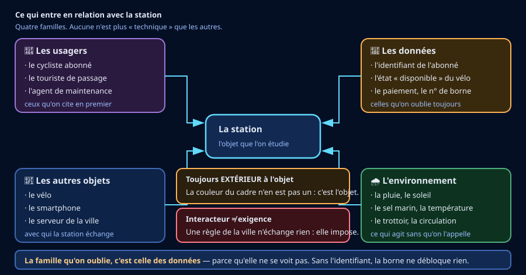

🎫 Billet d'entrée — je vérifie mes outils (4 min, sans note)
Trois questions. Aucune note : c'est un aiguillage.
🎒 Je révise en 3 minutes
Un objet technique est fabriqué pour répondre à un besoin. Une fonction technique dit à quoi il sert : elle commence par un verbe à l'infinitif.
L'environnement d'un objet, en technologie, ne veut pas dire « la nature ». C'est tout ce qui l'entoure et entre en relation avec lui : des personnes, d'autres objets, des conditions comme la pluie ou le froid, et même des règles.
🔎 Activité 1 — Recenser les interacteurs (~45 min)
Un interacteur est tout ce qui entre en relation avec l'objet : quelqu'un qui l'utilise, quelque chose qu'il touche, une condition qu'il subit. Pour les recenser, on tourne autour de l'objet et on se demande, à chaque fois : qui ou quoi est en relation avec lui ?

a) Trier ce qui est proposé
b) Les trois natures d'interacteurs
c) Ta liste
🪜 Version étayée — des phrases à compléter
La structure est donnée ; les interacteurs restent à trouver.
- « 1. ____ (personne) — il ou elle ____. »
- « 2. ____ (personne). »
- « 3. ____ (objet) — la station ____ avec lui. »
- « 4. ____ (objet). »
- « 5. ____ (condition) — elle agit sur la station en ____. »
- « 6. ____ (condition). »
💡 Aide de niveau 1
Fais le tour de la station par la pensée, comme si tu marchais autour : au sol, à hauteur de main, au-dessus, et sous la terre. À chaque endroit, demande-toi ce qui est en relation avec elle.
💡💡 Aide de niveau 2
Trois pistes que les élèves oublient presque toujours : ce qui alimente la station (électricité, réseau), ce qui la menace (pluie, sel, vandalisme), et ce qui la contraint (largeur du trottoir, règles de la ville). Aucune de ces trois n'est une personne — et c'est bien le problème.
📖 Correction complète
La couleur du cadre n'est pas un interacteur : c'est une caractéristique de l'objet lui-même. Un interacteur est extérieur à l'objet.
La pluie, le trottoir et le réseau en sont, même si aucun n'est une personne. La pluie agit sur la station, le trottoir la porte et la limite, le réseau lui permet de fonctionner. Un interacteur n'a pas besoin d'être vivant, ni visible, ni mobile.
Trois natures à couvrir : des personnes (usager, agent de maintenance, riverain), des objets (vélo, borne, trottoir, réseau, alimentation électrique), et des conditions (pluie, sel marin, température, vandalisme, règles de la ville).
Le réflexe qui coûte le plus : ne citer que des personnes. C'est ce que fait presque tout le monde à la première tentative — retourne voir ton hypothèse de départ.
🧠 À retenir : un interacteur est extérieur à l'objet, et ce n'est pas forcément quelqu'un. Personnes, objets, conditions : les trois comptent.
⚠️ Piège classique : confondre une caractéristique de l'objet (sa couleur, sa masse) avec un interacteur, qui est toujours à l'extérieur.
Critère de réussite : ta liste compte au moins six interacteurs et couvre les trois natures.
🔧 Activité 2 — Lire une décision dans une forme (~55 min)
Chaque détail de la station est une décision prise par quelqu'un, pour répondre à un interacteur. Lire l'objet, c'est retrouver la décision derrière la forme.
![Tableau à quatre colonnes : ce que j'observe, pourquoi pas autrement, l'interacteur concerné, le domaine de conception. Quatre exemples : la borne inclinée répond à la pluie (sécurité de fonctionnement) ; l'ancrage à 90 cm répond à l'usager (ergonomie) ; les arêtes arrondies répondent à l'usager et au riverain (sécurité) ; la vis unique répond à l'agent de maintenance (ergonomie du travail de maintenance) ; les pièces remplaçables une par une répondent au budget de la ville et à la matière à produire (développement durable). Un encadré rappelle qu'un choix technique déplace toujours le problème ailleurs.](Images/lire_un_choix_de_conception.svg)
a) Retrouver l'interacteur derrière le choix
b) Les trois domaines du programme, et ce qui les distingue
c) Ton relevé de choix
🪜 Version étayée — des phrases à compléter
- « J'observe que ____. Ce choix répond à ____ (interacteur). Il relève de ____. »
- « J'observe que ____. Ce choix répond à ____. Il relève de ____. »
- « J'observe que ____. Ce choix répond à ____. Il relève de ____. »
- « J'observe que ____. Ce choix répond à ____. Il relève de ____. »
💡 Aide de niveau 1
Devant chaque détail, pose une seule question : pourquoi pas autrement ? Pourquoi incliné et pas plat ? Pourquoi à cette hauteur et pas plus bas ? La réponse désigne presque toujours un interacteur.
💡💡 Aide de niveau 2
Les trois domaines du programme : l'ergonomie adapte l'objet au corps et aux gestes ; la sécurité protège des accidents ; le développement durable porte sur la matière, l'énergie et la durée de vie — réparabilité, matériaux, ce qu'il faudra produire à nouveau. Un même choix peut en servir deux : dis alors lequel domine.
L'esthétique est une vraie question de conception, mais elle n'est pas l'un des trois domaines de ce code. Cite-la si elle explique un choix, sans la compter comme un domaine.
📖 Correction complète
La borne inclinée répond à la pluie : l'eau s'écoule au lieu de stagner sur le lecteur — c'est exactement la panne signalée dans la situation de départ. Une station bien conçue anticipe ses interacteurs ; celle-ci a mal anticipé celui-là.
La hauteur de 90 cm relève de l'ergonomie : c'est la hauteur où l'on pousse un vélo sans se baisser. Les arêtes arrondies relèvent de la sécurité. La vis unique répond à l'agent de maintenance — vingt minutes pour sortir un vélo, c'était le deuxième symptôme du relevé.
Les pièces remplaçables une par une relèvent du développement durable : un objet réparable dure plus longtemps, donc il faut produire moins de matière et l'on jette moins. En bloc unique, une seule panne condamnerait toute la borne. Un choix de développement durable n'est pas une question de matériau « naturel » ni de recyclage en fin de course : il porte sur la matière, l'énergie et la durée de vie, dès la conception.
Un même choix peut servir deux domaines : la vis unique sert l'ergonomie de l'agent de maintenance et le développement durable, puisqu'elle rend la réparation possible. Dans ce cas, on dit lequel domine, et pourquoi.
🧠 À retenir : chaque forme est une décision. La question qui ouvre la lecture d'un objet, c'est « pourquoi pas autrement ? »
⚠️ Piège classique : dire « c'est pour faire joli » devant un choix qui protège d'un accident ou facilite un geste.
🔁 Activité 3 — Comparer deux stations (~35 min)
Une deuxième station, dans le même quartier, a fait d'autres choix : bornes abritées sous un auvent, ancrage au sol plutôt qu'en hauteur, et boîtier soudé.
🌍 Transfert — la même station à Sainte-Luce
🪜 Version étayée — des phrases à compléter
- « L'interacteur ____ change, parce qu'en Martinique ____. Il faudrait revoir ____. »
- « L'interacteur ____ change aussi : ____. Il faudrait revoir ____. »
- « Enfin ____ apparaît, qui n'existait pas à Shenzhen. Il faudrait ____. »
💡 Aide de niveau 1
Compare les conditions des deux lieux avant de comparer les objets : quelle pluie ? quel air ? quel relief ? quels événements exceptionnels ?
💡💡 Aide de niveau 2
Trois interacteurs martiniquais à ne pas manquer : l'air salin, qui attaque les métaux ; les pluies intenses, bien plus fortes qu'une averse ; et le cyclone, qui n'est pas une pluie forte mais un interacteur à part entière — il faut pouvoir démonter ou protéger.
📖 Correction complète
Auvent et borne inclinée répondent au même interacteur : la pluie. Deux réponses techniques différentes au même problème — c'est normal, et chacune a ses conséquences.
L'ancrage au sol gagne de la place et le paie en ergonomie. Le boîtier soudé résiste mieux au vandalisme et le paie en maintenance. Un choix technique n'est jamais gratuit : il déplace le problème ailleurs. Savoir dire où, c'est lire un objet.
En Martinique, trois interacteurs changent : l'air salin attaque les métaux — il faudrait revoir les matériaux et les traitements de surface ; les pluies sont bien plus intenses — l'inclinaison ne suffirait plus, il faudrait un abri ; et le cyclone apparaît, qui n'existait pas à Shenzhen — il faut pouvoir démonter, arrimer ou protéger.
🧠 À retenir : un choix technique n'est jamais gratuit : il déplace le problème ailleurs. Et changer de lieu, c'est changer d'interacteurs.
🪞 Mon bilan personnel (~15 min)
💭 Rappel de ton hypothèse de départ :
🪜 Version étayée — des phrases à compléter
- « Au départ j'avais cité ____ interacteurs, dont ____ étaient des personnes. »
- « Je n'avais pas pensé à ____. »
- « Maintenant j'ajouterais ____. »
🪜 Version étayée — des phrases à compléter
- « J'ai appris qu'un interacteur est ____. »
- « J'ai appris que chaque forme d'un objet est ____. »
- « J'ai appris qu'un choix technique ____. »
🪜 Version étayée — des phrases à compléter
- « Je dois encore revoir ____, parce que ____. »
- « Ce que je n'arrive pas encore à faire seul·e : ____. »
Je me positionne
🧠 Prêt·e à t'entraîner ?
Le QCM de la séquence t'attend : 30 questions, dont 3 illustrées, et chaque réponse fausse expliquée.
🎁 Bonus (facultatif — hors parcours obligatoire)
1. Recense les interacteurs d'un objet du collège que tu utilises tous les jours — un distributeur, un portail, un casier. Combien en trouves-tu qui ne sont pas des personnes ?
2. Choisis un détail de cet objet et réponds à « pourquoi pas autrement ? ». Quel interacteur ce choix sert-il ?
3. Dessine la station telle qu'il faudrait la concevoir à Sainte-Luce. Annote chaque modification avec l'interacteur qui la justifie.